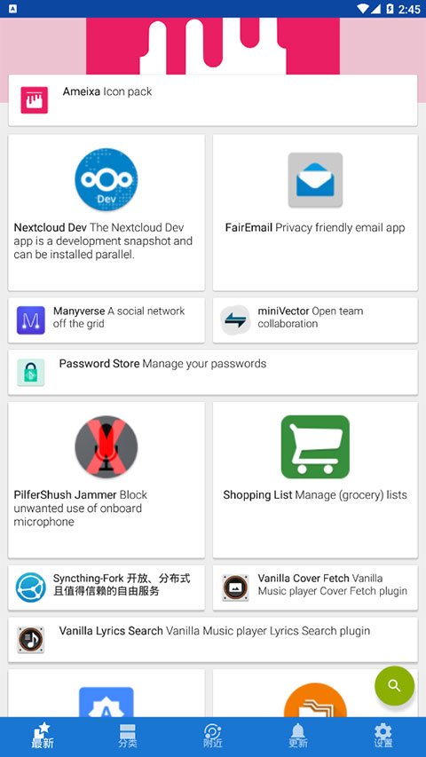

换掉 Google Play 的第一天：用 F-Droid 重新认识安卓的自由世界
还在为 Google Play 的账号绑定和追踪犯愁？这篇文章带你从零开始接触 F-Droid，五分钟装完、三天上手，告别广告和追踪，拥抱真正自由的安卓生态。
这篇能带你从完全不懂到用起来——不需要任何刷机经验，也不需要知道什么是开源、什么是反特性（第一次提到这些词我都会顺手解释）。
先花一秒钟想一个生活化的场景：你手机里的应用商店像不像小区门口那家连锁超市？东西确实全、价格也公道，但每次你去买东西，店员都盯着你买了什么、几点来的、花了多少钱，然后把这些信息打包卖给旁边的广告公司。更糟的是，超市老板还能随时把你常买的某样东西从货架上撤掉——你连说都没法说。
F-Droid官网介绍的这款应用商店，就是那个街角新开的、不收会员费、也不装摄像头的社区杂货店。它不卖山寨货，只卖明码标价（其实很多是免费的）、原料公开、可以自己溯源的正经商品。

五分钟装完：从官网到第一次打开
好消息是，F-Droid 不需要 Google 账号，也不需要 root（root 是获得手机最高权限的操作，新手先别碰）。整个安装过程就是下载一个 APK 文件然后点开确认。
具体步骤：
- 打开浏览器，搜索 F-Droid 找到官网，去下载页面拿最新的 APK 安装包。APK 是安卓应用的安装文件格式，就像 Windows 上的 .exe。
- 下载完成后，下拉通知栏点开那个 APK。系统可能会弹出「是否允许此来源安装应用」的提示——允许它就行，这是安卓对未知来源安装的安全提示，F-Droid 本身是可信的。
- 点「安装」，等十几秒钟，绿色小机器人图标就出现在你的应用抽屉里了。
第一次打开 F-Droid，你会看到一个干净的蓝色界面，中间是应用分类浏览，底部有三个导航标签：浏览、设置和更新。没有弹窗广告，也没有让你登录的提示——就这么静悄悄地打开了。

上手后先玩这三个功能
装完别急着搜应用，先把 F-Droid 最独特的三个功能摸一遍——这也是它和其他应用商店拉开差距的地方。
看一眼应用详情页的「反特性」标签
随便点开一个应用，比如浏览器类里的「Fennec」。拉到下面，你会看到一组彩色标签，上面写着「广告」「追踪」「非自由依赖」之类的字样。这就是 F-Droid 独创的「反特性标注」——它不是在说这个应用有 bug，而是在告诉你「装它之前要知道这些事」。
你会发现，绝大多数 F-Droid 应用的反特性区域是空的——这意味着它们没有广告、不追踪你、也不依赖闭源的第三方组件。这和 Google Play 上那种弹窗广告、推送通知、后台偷偷收集位置的应用形成了鲜明对比。
打开反特性过滤
进到设置页面，找到「反特性过滤」这一项，把广告、追踪、非自由依赖这三个开关打开。从这一刻起，浏览列表里就再也不会出现带这些标签的应用了。相当于自动帮你做了一轮清爽筛选——以后搜出来的东西默认就是干净的。
这个功能乍看简单，却是 F-Droid 的核心竞争力之一。Google Play 最近也开始标注数据安全了，但那是开发者自己填的，没人真的去审计。F-Droid 的反特性是社区审核员一个个核实的，可信度完全不在一个量级。
试试 Nearby 离线分享
在浏览标签页的右上角菜单里找到「Nearby」。打开后会扫描周围同样开了 Nearby 的 F-Droid 用户——如果你身边正好有朋友在用，你们可以蓝牙互联，面对面分享应用，完全不花流量。
我第一次用这个功能是在高铁上，旁边的同事一直在刷流量视频，我用 Nearby 把 F-Droid 上的几个离线阅读应用推给了他，全程零网络零费用。关于 Nearby 的更多玩法和注意事项，F-Droid文档里有完整说明。
小白的三个常见疑问
F-Droid 上应用够用吗？微信支付宝有吗？
坦白说，没有。F-Droid 收录的全部是自由开源软件（简称 FOSS，源代码公开、任何人可以查看和修改的软件），而微信、支付宝、抖音这类商业应用都是闭源的，不会出现在 F-Droid 上。
但这不代表你的安卓机就废了。有个叫 Aurora Store 的开源应用可以匿名访问 Google Play，你可以用它下载闭源应用，不需要 Google 账号。推荐的组合是：日常主力应用从 F-Droid 装，偶尔需要的闭源应用从 Aurora Store 补。
为什么 F-Droid 不让开发者自己上传 APK？
这是 F-Droid 和 Google Play 最本质的区别之一。在 Google Play 上，开发者把编译好的 APK 文件直接上传，Google 只做安全扫描。但 APK 是编译后的二进制文件，你没法知道里面到底藏了什么代码——开发者完全可以在上传前加个追踪器，没人发现得了。
F-Droid 的做法是：开发者把源代码提交上来，F-Droid 的服务器从零开始编译，然后签名发布。这意味着你安装的 APK 和公开的源代码是逐行对应的，有什么恶意代码一眼就能看出来。这个机制叫「可重现构建」，目前只有少数开源应用商店能做到。
第三方仓库能随便加吗？
F-Droid 可以添加第三方仓库——比如 IzzyOnDroid（应用最多的补充仓库）、Guardian Project（安全敏感用户的首选）。但别贪多，建议控制在 2~3 个以内。
加新仓库时注意两件事：一是只从可信来源获取仓库地址（F-Droid 官网的仓库列表、开发者自己公布的地址），别随便搜一个就加；二是确认仓库签名指纹和官方公布的完全一致——F-Droid 添加仓库时会自动弹窗显示指纹，花十秒钟对照一下。加完第三方仓库后，反特性过滤一定要开，第三方仓库的审核通常比官方松一些。
接下来怎么走
这篇文章带你完成了 F-Droid 最基础的安装和上手。想继续深挖的话，可以试试固定某个应用的版本不跟随更新（应用详情页右上角菜单里有「不自动更新」选项），或者翻一遍 F-Droid 上的版本历史功能——你会发现有些应用的历史版本比新版还好用。
F-Droid 的资料和完整文档在GitHub、Gitee、GitCode三处都有同步，国内用户访问 Gitee 会更顺畅一些。它从 2010 年一个只有几个开发者的小项目，发展到今天收录数千款应用、被 LineageOS 等知名定制 ROM 预装，靠的就是社区的信任和透明。
换掉 Google Play 的第一天，你会发现手机安静了许多——没有推送通知轰炸，没有应用偷偷请求定位权限。这种「手机归你自己」的感觉，是每个用过 F-Droid 的人都不想回去的。